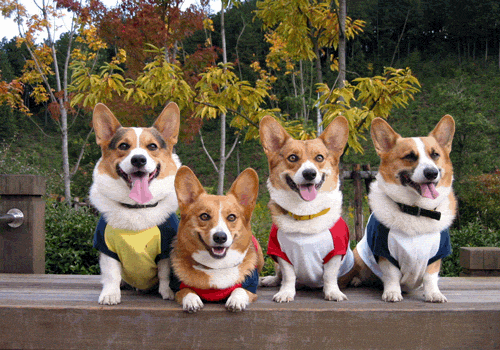

A PETVET, fundada em 1988, pela Família Good, apaixonados por animais, localiza-se na zona sul de Americana numa ótima localização que atende os bairros da Vila Pântano, Vila Velha, Centro, Ipiranga e Cidade Jardim entre outros.
Dispomos de instalações espaçosas, equipamentos modernos e sofisticados meios auxiliares de diagnóstico.
Somos Sinônimo de Qualidade e Referência em Ortopedia Veterinária.
A PETVET visa na sua essência a prestação de um serviço de excelência ao nível dos cuidados médicos de animais de companhia (cães, gatos e animais silvestres).
